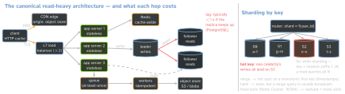
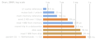

cs · folio
In one line: Servers stateless behind a load balancer; reads taken off the database by caches and replicas; writes split by sharding; slow work on queues; truth settled by a majority. Each step trades scale for a named cost — staleness, lag, hot keys, duplicates.
Download PDF Print view LaTeX source


Load balancers
| sees | does | |
|---|---|---|
| L4 | TCP / UDP flows | one target per connection (AWS NLB: hash of protocol, IPs, ports, TCP sequence); TLS passes through |
| L7 | HTTP host, path, headers, cookies | ends TLS; rules route each request by content; sticky cookie; retries |
Algorithms: round-robin (weighted), least connections, IP / consistent hash (affinity), two random choices (nginx random two least_conn: draw 2, take the one with fewer active connections; the shorter of two queues balances exponentially better than one random pick). Only healthy targets get traffic. Retry on another server only if idempotent — PUT, DELETE, safe methods (RFC 9110); by default nginx does not resend a POST / PATCH already sent. State in a server’s memory breaks all of it → Redis / DB or a signed token.
Caching — patterns, stampedes
| cache-aside | app reads cache; miss → DB → fill; write DB, then delete key | “lazy loading” |
| read-through | the cache loads from the DB itself | simpler app code |
| write-through | write cache + DB synchronously | fresh; slower writes |
| write-behind | write cache; flushed to DB after a delay | fast; unflushed = cache only |
| refresh-ahead | reload a hot entry before it expires | no miss on expiry |
Delete, don’t update on write: deletes are idempotent; concurrent sets can land out of order (a stale set). TTL bounds staleness. Stampede: recomputes ≈ request rate × recompute time (10/s × 3 s = 30). Fixes: one recompute per key (lock / single-flight) + serve stale; leases (memcache: one token per key per 10 s took peak DB load from 17K/s to 1.3K/s); probabilistic early refresh (XFetch). Miss rate 10 % → 1 % = 10× less DB load. Redis ships maxmemory-policy noeviction (writes fail when full; a cache wants allkeys-lru) and appendonly no.
Replication, quorums, consensus
- Leader–follower (PostgreSQL): streaming replication is async by default — lag typically <1 s; a primary crash can lose committed transactions. Sync: commit waits for the standby’s WAL flush, loss only if both crash;
remote_applywaits until it is visible there;ANY 2 (s1,s2,s3)= quorum commit. - Lag breaks read-your-writes: read your own data from the leader, or wait until the replica’s
pg_last_wal_replay_lsn()passes the write’s LSN. Monotonic reads: pin a user to one replica. Redis replicates async;WAITdoes not make it CP. - Multi-region: DynamoDB global tables settle conflicts “last writer wins” per item. A hot key meets a hard ceiling there: each partition serves at most 3,000 reads + 1,000 writes per second (units of 4 KB / 1 KB).
- Cross-shard is the cost of sharding: Redis Cluster runs a multi-key command only when every key hashes to one slot — hash tags force it (
{u1}.following,{u1}.followers). - Leaderless (Dynamo, Cassandra): N replicas, write W, read R; W + R > N ⇒ the sets overlap; Dynamo’s usual (N,R,W) = (3,2,2); N=2, W=R=1 guarantees nothing. Sloppy quorum: the first N healthy nodes + hinted handoff → “always writeable”, conflicts reconciled on read — deleted items can resurface.
- Raft: ≤1 leader per term; an entry commits once on a majority; 2f+1 servers survive f failures (5 → 2). Randomized election timeouts (e.g. 150–300 ms); broadcast (0.5–20 ms) ≪ election timeout (10–500 ms) ≪ MTBF (months).
- Fencing: a lock holder paused by GC past its lease still writes — the storage rejects token 33 once it has seen 34.
Back-of-envelope
1 day ≈ 105 s → 1M requests/day ≈ 12 QPS; in flight = rate × latency (Little, L = λW); storage × 3 replicas (HDFS default). Downtime: 99.9 % = 8.76 h/yr (43.2 min/month) · 99.99 % = 52.6 min/yr · 99.999 % = 5.26 min/yr; serial dependencies multiply. Targets are percentiles: Dynamo’s example SLA is 300 ms for 99.9 % of requests at a peak of 500 req/s. Example: 10M DAU × 20 = 2×108/day → ∼2,300 QPS, ∼7,000 at an assumed 3× peak, ∼460 in flight at 0.2 s; 10 % post a 500 KB photo/day → 500 GB/day → ∼180 TB/yr, ×3 ≈ 0.5 PB → object store + CDN.
CAP, PACELC, consistency
CAP: in a partition an operation refuses (C) or answers from what it has (A). “2 of 3” “was always misleading” (Brewer, 2012): partitions are rare, the choice is per operation, and “a partition is a time bound on communication”. ATMs pick A: stand-in mode caps net withdrawal (“k might be $200”). PACELC (Abadi, 2010): if P, A or C; else Latency or Consistency — Dynamo, Cassandra PA/EL · ACID PC/EC · PNUTS PC/EL.
| model | guarantee | partition |
|---|---|---|
| strict serializable | serializable + linearizable (Spanner: stronger still) | no |
| linearizable | one copy, real-time order: locks, unique names | no |
| serializable | as if one at a time, in some order | no |
| causal | causally related ops in one order everywhere | sticky |
| read-your-writes | a process sees its own writes | sticky |
| monotonic reads | reads never go backwards | yes |
| eventual | if writes stop, reads return the last value | — |
Sticky = only while a client stays on one server (Jepsen). TrueTime: Spanner’s TT.now() is an interval [earliest, latest] from GPS + atomic-clock masters, ε ∼1–7 ms (mean 4); commit wait until TT.after(s) (≥ 2ε̄, overlapped with Paxos) buys external consistency. PostgreSQL: Read Committed by default; Serializable is SSI and fails with 40001 — retry the transaction.
Queues and logs
| SQS | Kafka | |
|---|---|---|
| delivery | standard at-least-once; FIFO exactly-once processing (5-min dedup) | at-least-once by default; exactly-once Kafka → Kafka (transactions) |
| order | standard best-effort; FIFO per message group, 300 TPS per partition | per partition (same key, same partition); 1 consumer per partition per group |
| after read | hidden 30 s (≤12 h), redelivered unless deleted; kept 4 d (≤14 d) | kept for the retention (168 h shipped); consumer commits an offset |
SQS messages ≤1 MiB; dead-letter after maxReceiveCount; alarm on ApproximateAgeOfOldestMessage. Outbox: the event row commits with the data; a relay publishes it, maybe twice → dedupe by id. Saga: local transactions + compensations, no isolation.
Latency — the numbers and the tail

Keep the ratios. Fibre ∼200,000 km/s → ∼1 ms RTT per 100 km: NY–London ≥56 ms, NY–Sydney ≥160 ms; 4G 30–100 ms once connected. Fan-out: 1 in 100 responses slow × 100 servers → 63 % of requests slow (1-0.99100); Google: p99 of one leaf 10 ms, of all leaves 140 ms. Hedge after 10 ms: p99.9 1,800 → 74 ms, +2 % requests.
Traps
- CAP as “pick two”; averages instead of p99 — fan-out makes the rare case common.
- Reading a replica right after a write — the user’s change vanishes.
- Updating the cache on write; a lock without a fencing token.
- Retrying a non-idempotent call without a key — charged twice.
Remember
Stateless → cache → replicate → shard → queue; a majority for truth. For each: what goes stale, what breaks, which number made it necessary.